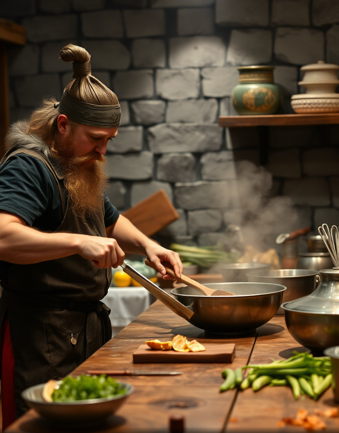

Aquí no cocinamos con prisas ni con microondas... ¡Aquí viajamos en el tiempo con cada cucharada! Prepárate para descubrir recetas que han alimentado imperios, dado fuerza a exploradores y endulzado la vida a reyes y campesinos por igual.
¿Sabías que los vikingos preparaban gachas energéticas antes de zarpar? ¿O que los romanos eran fans del garum, una salsa de pescado con más historia que tu tupper del domingo?
Acomódate, afila tus cuchillos (¡y tu curiosidad!) porque estás a punto de darle un buen mordisco a la historia.
¡Que el fuego esté siempre bajo tu caldero!